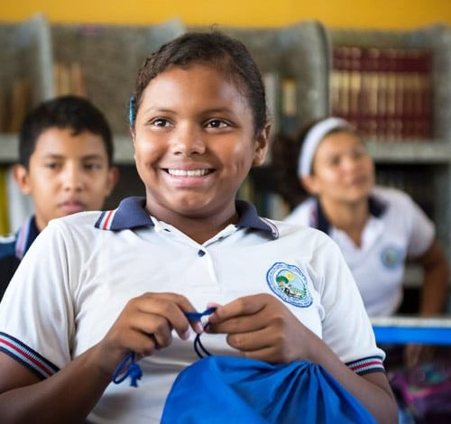
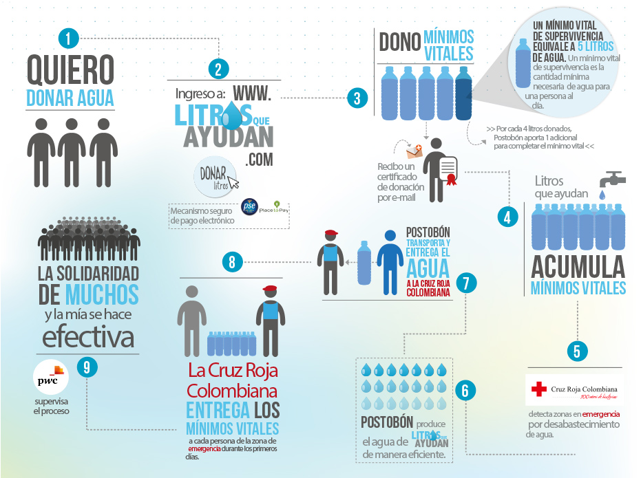
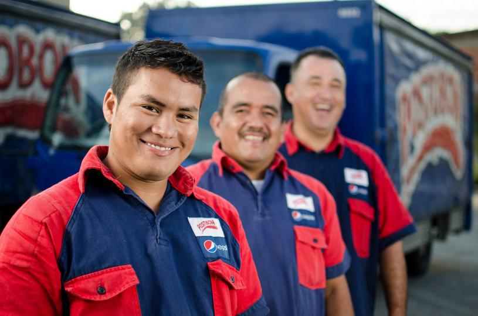

Notas de interes
Fundación Postobón
Quiénes somos
La Fundación Postobón está conformada por personas apasionadas por el servicio y la transformación social. Asimismo contamos con una red de aliados para la ejecución y operación de nuestros programas.
La Fundación Postobón es una entidad sin ánimo de lucro, cuyo objeto social principal es destinar recursos a la inversión social que promuevan el interés general, a través de programas y proyectos de educación, deporte, salud y nutrición, investigación, protección del medio ambiente, cultura y desarrollo social.
Este objeto se cumple con el desarrollo de programas y proyectos en alianzas público-privadas, bajo metodologías de innovación social disruptiva y sostenible.
Los programas que opera la Fundación son financiados con los aportes que Postobón hace a manera de donación. Parte de dichos aportes provienen de la marca social Agua OASIS de Postobón. Adicional a esto, la Fundación recibe aporte de otras entidades aliadas que se han vinculado a los programas operados con el fin de ampliar su alcance e impacto.
Litros que ayudan
Hay una comunidad esperando nuestra ayuda!!

El corregimiento de Siapana del Municipio de Uribia, en La Guajira necesitan agua, su población esta viviendo momentos difíciles y necesitamos llevar 1.200 garrafas de agua a este lugar.
¡Necesitamos de tu solidaridad! ¡Te invitamos a donar!
Por cada 20 litros que se dones, nosotros aportamos 5 adicionales y nos encargamos de transportarlos, para garantizar que lleguen a quienes los necesitan.
¡Cuando la solidaridad fluye como el agua, todo fluye!
Trabaja con nosotros
Haz parte de nuestro talento
En Postobón vivimos para dejar huella, por eso queremos contar con el mejor talento humano del país para que se tomen la vida con compromiso, responsabilidad y orgullo, logrando los objetivos que tenemos como compañía, los cuales son vitales para el desarrollo de Colombia. Actualmente, nuestro talento humano esta conformado por cerca de 11.000 personas que constantemente viven en equipo para un mismo reto. Te invitamos a postularte a nuestras distintas convocatorias de empleo y hacer parte del talento Postobón.
Conoce más